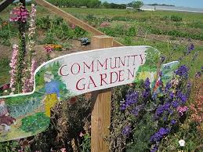
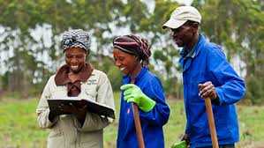
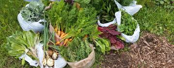

Who are we?
Our background
Statistics South Africa’s General Household Survey showed that
- 12.3 million people reporting inadequate or severely inadequate food access
- 14 Million people go bed hungry
- 31% of children who died in hospital between 2012 and 2013 were severely malnourished
Garden Fairies was formed in 2016 with the aim to empower communities by teaching then to grow their own food sustainably.
What we do
Since our inception in 2016, we have worked hand in hand with various communities, securing food one garden at a time

We establish community gardening projects in collaboration with communities, schools and churches

We educate the community around small scale agriculture

Creating a culture of self sufficiency
Our Values
- Community development
- Empowerment
- Sustainability
Our Vision
- Self-sufficient communities
- End hunger and malnutrition
- Sustainable living